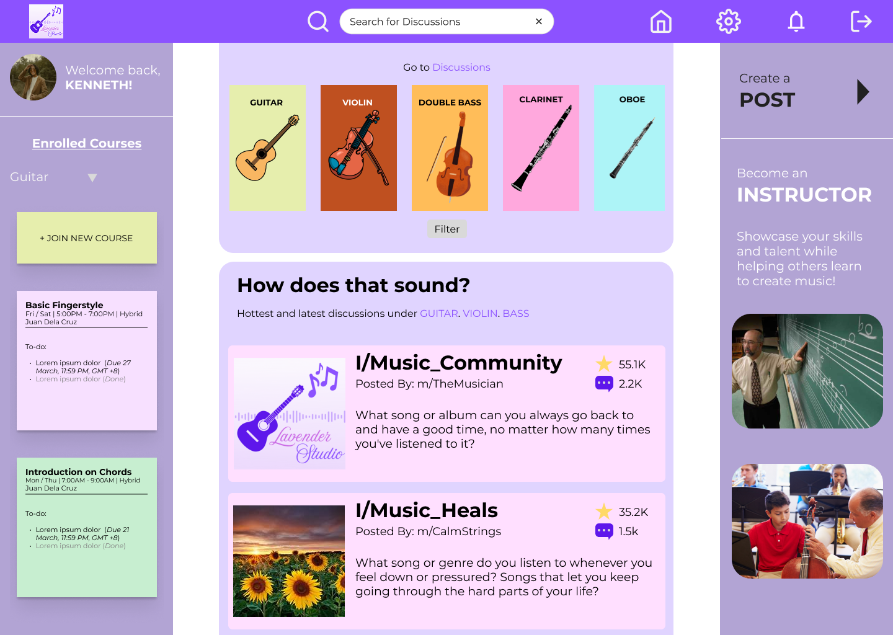
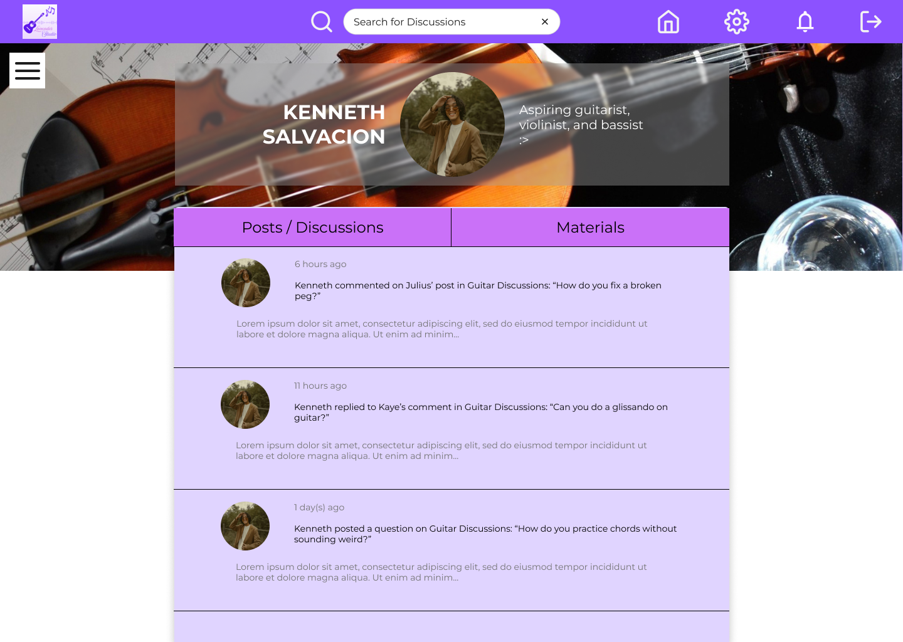
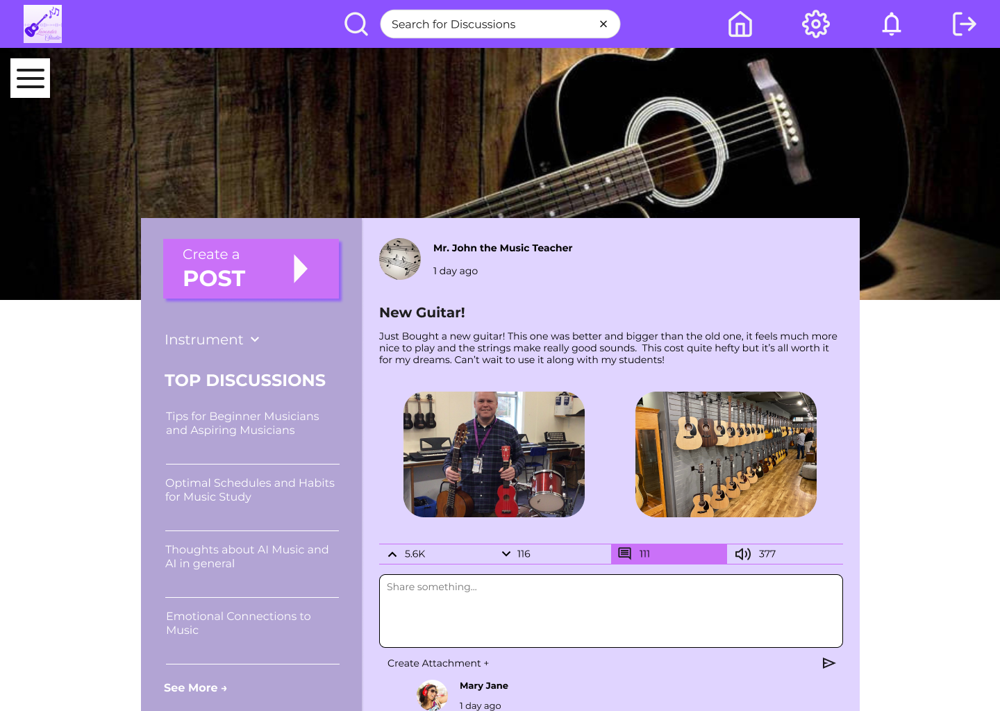
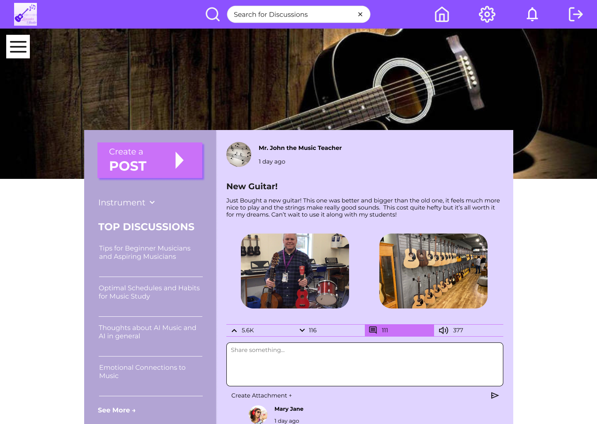
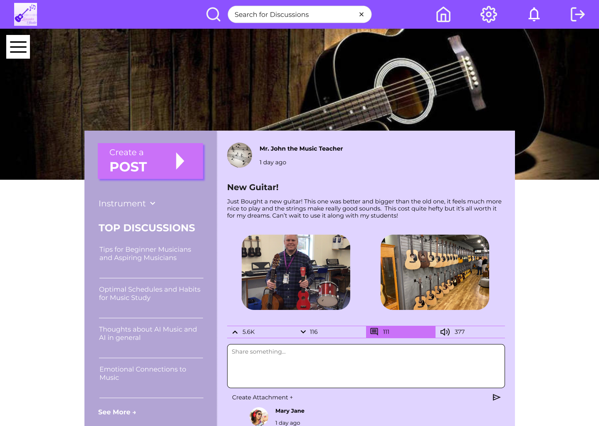

On Desktop




 


Lavender Studio mainly acts as a Learning Management System in its early MVP concept. Users are encouraged to be part-learner and part-instructor, giving them the flexibility and confidence to teach their skills. As an early design concept, there is still much to add for it to become a “studio” such as adding a feature for music composition.